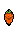

WoW! A 2D Platformer where you play as a bunny!
Explore a vast and wondrous world, overcome challenges, and uncover secrets.
Play Now
Features

Revamped Player
Enjoy fluid and responsive controls with the revamped player character.

Collect & Upgrade
Gather carrots to unlock new abilities and power-ups.

Epic Boss Fights
Challenge mighty bosses, each with unique mechanics and attack patterns.
In Game Experience:


About
World O' Wonders is a 2D platformer created by Trayauraus / T-Man. It is built with the Godot Engine and features a charming pixel art style, challenging gameplay, and a world full of secrets to discover.
Download
The game is available for free on GitHub. Click the button below to download the latest version.
Download from GitHub